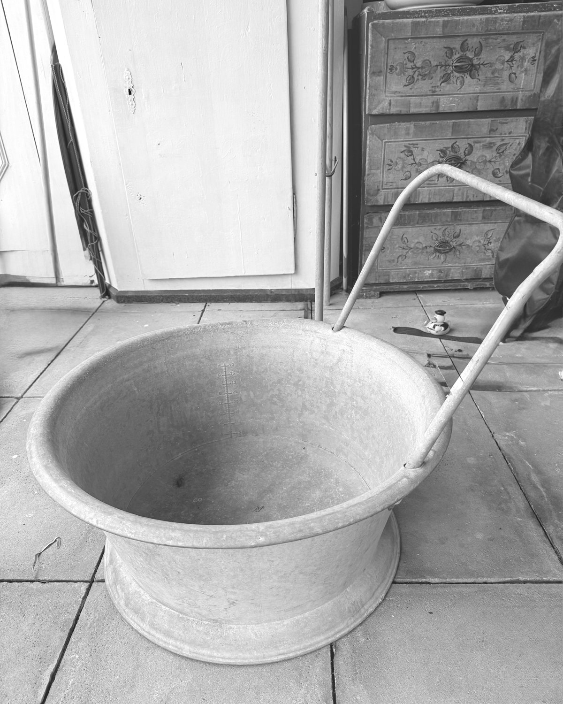
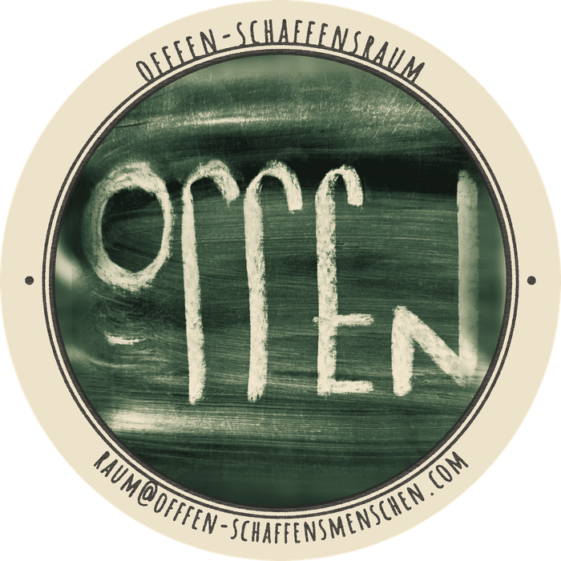
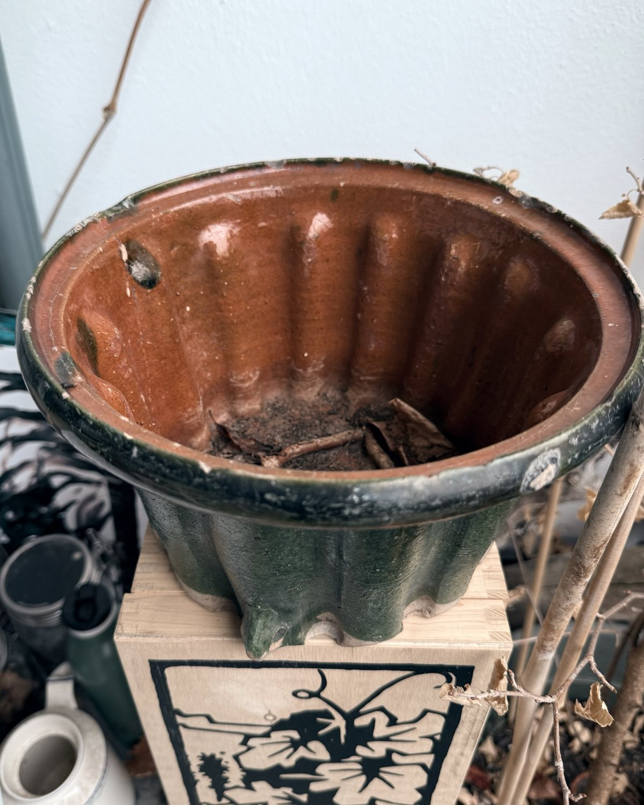
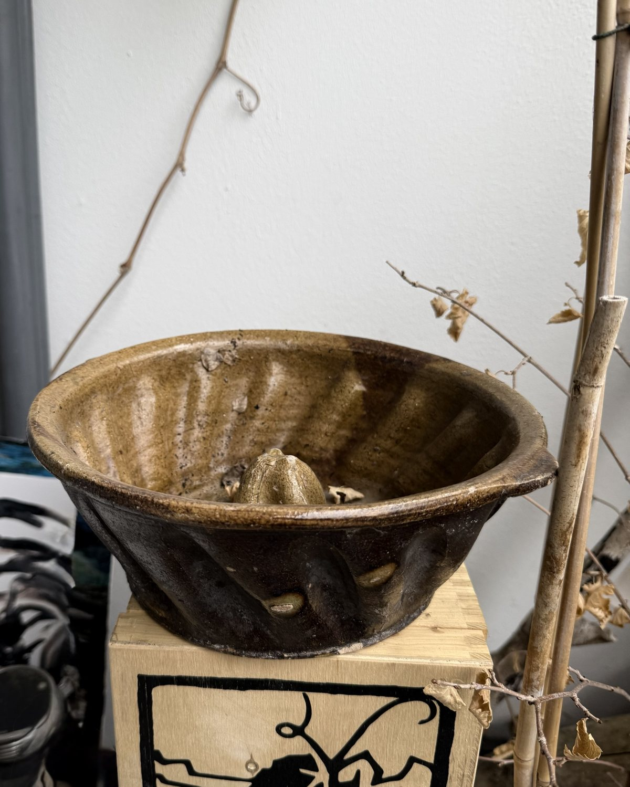
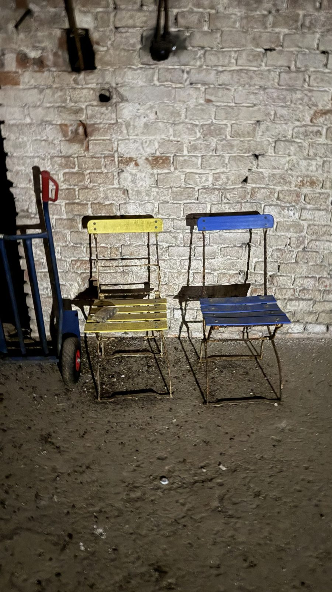
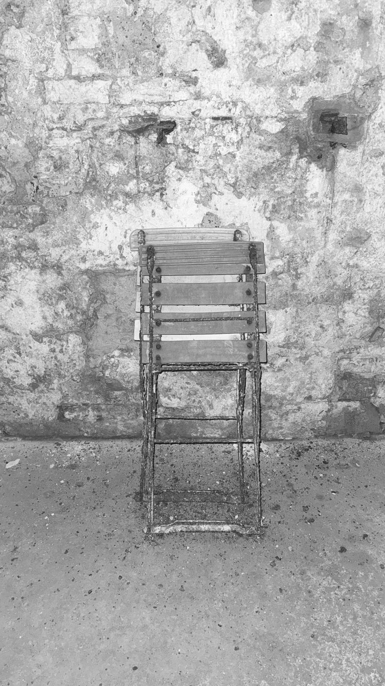
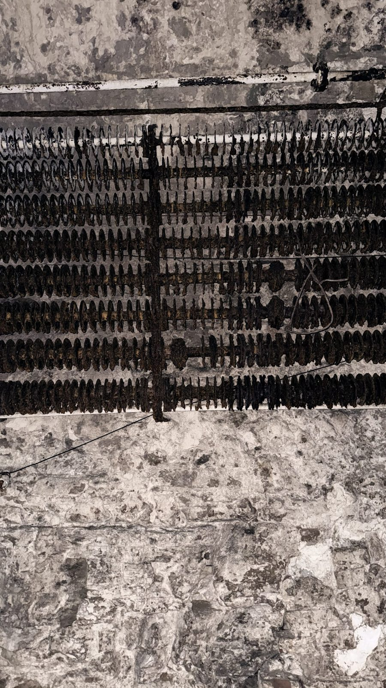
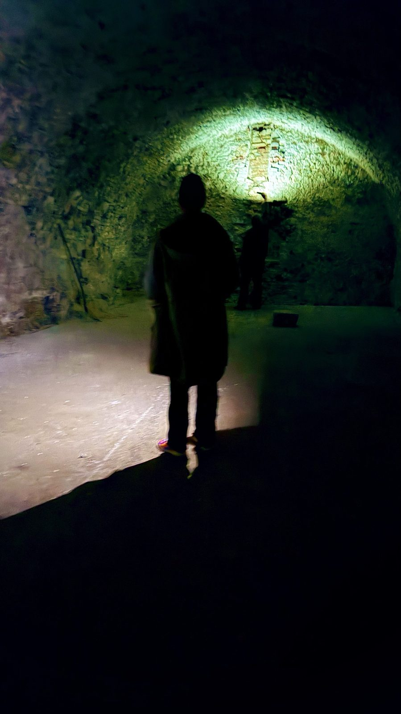

zink-zuber mit henkelzinc tub with handle
Große Wanne aus verzinktem Blech, innen mit Skala von A bis H.Large tub of galvanised sheet metal, with a scale from A to H inside.
preis auf anfrageprice on request
anfragen →
offfen-schaffensraumVintage-Lampen, Möbel und Fundstücke aus dem offfen-schaffensraum. Einzelstücke, ausgesucht und neu gesehen. Vintage lamps, furniture and found objects from the offfen-schaffensraum. One-of-a-kind pieces, chosen and seen anew.
aktuell im raumcurrently in the space

Große Wanne aus verzinktem Blech, innen mit Skala von A bis H.Large tub of galvanised sheet metal, with a scale from A to H inside.
preis auf anfrageprice on request
anfragen →
Keramikform, außen grün, innen orange-braun glasiert.Ceramic mould, glazed green outside and orange-brown inside.
preis auf anfrageprice on request
anfragen →
Braun glasierte Backform mit Mittelzapfen, mit Gebrauchsspuren.Brown-glazed baking mould with a centre cone, with signs of use.
preis auf anfrageprice on request
anfragen →
Gartenstühle aus Metall und Holz, gelb und blau gestrichen.Garden chairs of metal and wood, painted yellow and blue.
preis auf anfrageprice on request
anfragen →
Zusammengeklappt, mit Spuren der Zeit.Folded, with traces of time.
preis auf anfrageprice on request
anfragen →
Industrielles Fundstück mit Spiralen, rau und eindrucksvoll.Industrial find with spirals, rough and striking.
preis auf anfrageprice on request
anfragen →ganz einfachsimple
Du suchst dir ein Stück aus und tippst auf „anfragen“.You pick a piece and tap “enquire”.
Du schreibst uns eine kurze E-Mail. Wir antworten mit Preis und Details.You send us a short email. We reply with price and details.
Wir vereinbaren gemeinsam, wie das Stück zu dir kommt.Together we agree on how the piece reaches you.

hier warten die dinge auf ihr nächstes leben.here the things wait for their next life.